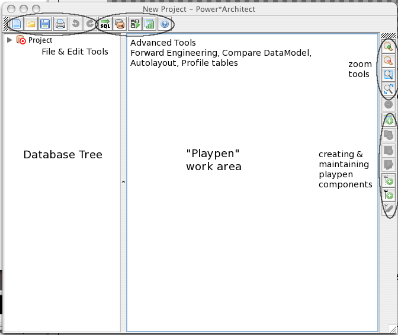

Table of Contents
- 1. Installation Guide
- 2. How to Use the Power*Architect
- 3. Summary
- 4. Database Product Notes
- 5. Troubleshooting
- 6. Glossary
List of Tables
Data Architects, DBAs, Analysts and Designers rely on state-of-the-art Data Modeling Tools to facilitate and simplify their data Modeling efforts, while maximizing the use of their resources. The Power*Architect program allows these busy highly technical professionals to perform this most intricate part of their job in a fraction of the time.
SQL Power Group's Power*Architect is an innovative data modeling tool designed primarily for Data Warehouse and Data Mart design. It allows the designer to open multiple concurrent source Database connections, drag and drop source schemas, tables and columns into the data modeling playpen, and forward-engineer the resulting target database and its associated ETL template.
The Power*Architect is a user-friendly DW data modeling tool created by data warehouse designers, and has many features geared specifically for the data warehouse architect, including:
Access any JDBC- or ODBC-accessible source database;
Design every aspect of the target database Data Model;
Compare the database structure of any two databases, highlighting the structural differences and generating the required DDL to synchronize;
Compare the Data Model data structures to an existing target database; Save a snapshot of all source systems’ data structures in the project file, allowing data warehouse designers to evolve their target data model remotely;
Forward engineer to Oracle, SQL Server, DB2, PostgreSQL and other databases;
Forward engineer ETL Templates containing source-to-target data mappings;
Invoke ETL Engine to load initial set of data into the target database;
Enable easy centralized installation and updates to multiple end users (using Java WebStart™ technology).
Power*Architect can open multiple source databases concurrently, even those from competing database vendors. Another key feature of the Power*Architect that sets it apart from other data modeling tools is that it remembers the origin of each column, and is capable of automatically generating the source-to-target data mappings.
Whether you’re building or maintaining your Data Warehouse data model, the Power*Architect will provide you a complete view of all required database structures and will expedite every aspect of your data warehouse design.
We firmly believe you can...
Power*Architect is a versatile tool for the busy data warehousing practitioner.
Project – a Power*Architect project consists of a view of multiple databases; you can load and save a Project to work on it at leisure.
Driver – Most programs need a distinct driver program to communicated with each different type of database. Power*Architect uses Java-based drivers, which normally come from the database vendor in the form of "JAR" [1] files. You need to inform Power*Architect about each driver before you can use it; do this from the User Preferences panel, under JDBC Drivers (just click Add and browse to the Jar file for your driver). If you do not have the JDBC driver for a given database, you can usually obtain one from the database vendor. If that fails, you can find a directory of databases drivers on Sun's web site .
Playpen – This is the main area of the Power*Architect window, in which you manipulate tables and relationships. You can play here to your heart's content, knowing it will not be saved until you ask the program to save.
This book is a step-by-step guide on how to use the full capabilities of Power*Architect . It covers topics from how to install the Power*Architect through setting up database connections to engineering your data model.
We assume you are familiar with basic database terms. If you meet any terms that are unfamiliar, please refer to the Glossary at the end of this book.
This book also assumes you are familiar with basic computer operations.
We also assume you have SQL Power's Power*Architect software installed on your computer; if not, please refer to the Installation Guide.
Table of Contents
When you start the Power*Architect, you will see the Project window, shown below, which is the main view area and starting point for actions.

Database Tree – This is where you can add, maintain and explore imported connections. It uses a tree-node dropdown method. Therefore to explore inner components, you can expand components within this container as needed.
Playpen – This is the main area of the window, in which you manipulate tables and relationships. You can play here to your heart's content, knowing it will not be saved until you ask the program to save.
Playpen Components – These are the components that can go into the playpen. The playpen components are Tables and Relationships.
Zoom Tools allow you to control the magnification level of components display
Delete will delete the selected component(s).
Create/Maintain Playpen Components is discussed in XXX below.
When getting started, you need to set up some files and drivers to use the full functionality of the Power*Architect. If you have not already done so already, please go to “User Preferences” under the File Menu to configure the Power*Architect. This will pop up a dialog (shown below) where you can specify your file locations.
The pl.ini file stores the database connections that you set up (see JDBC Drivers on page 8). If you leave this location blank, the Architect program will prompt you to use a default location when you start it up. If you have a pl.ini file from other SQL Power applications you should generally use the same file, as doing so will save you from having to re-enter all your database connection information. The Power*Loader Engine setting is optional; if you are not using the Power*Loader engine you can leave this blank; if you are, you should set it to the location where the Power*Loader Engine program is installed on your system. The next two settings are for log files that will be written when you use the ETL and Forward Engineering functions of the application. The final setting controls the operations of graphics in the PlayPen. Turning “antialiased rendering” on may give better display of the graphical database layouts shown in the PlayPen, but may use more CPU time in the process.
Besides setting up these file locations, you must also tell the Power*Architect about the JDBC drivers you wish to use. JDBC Drivers are needed to access most databases, and are distributed in "JAR file" format. Click on the “JDBC Drivers” tab and click Add... to specify the location of a JDBC driver jar file; if it is valid, the system will list the names of any Driver classes found in it, as shown below (note that "ojdbc" stands for Oracle's JDBC driver, whereas "ODBC" is Microsoft's technology for database access).
Note: The tie-in between Drivers and Connections might seem a bit indirect if you are not used to using Java JDBC. In this section of the User Preferences you are simply telling the Power*Architect to load these drivers into memory when it starts up. When you set up an actual Connection, you implicitly tell the software which driver to use by the second field of the "db URL" as described on page 21. If you need more information on JDBC drivers, please refer to the Basic Concepts section of this manual on page 3.
This section will show you how to set up [2] a simple database “from scratch”, just to get you started using the tools, without modifying any live data. If you follow the example literally, you will create a trivial "customer and orders database".
Setup Driver. Select File->User Preferences and select the JDBC Drivers tab. If there is already an entry for the driver you wish to use,, click OK and go on to the next step. Otherwise, click the Add button, navigate to where you have the driver Jar file installed, and click OK.
Create a Connection. In the Database Tree section of the main window, right click and choose Add Source Connection->New Connection. For this example you can use a name like SampleDB, for both the Connection Name and the Database name (these names do not have to be the same, but we'll keep them the same for simplicity). If you select the JDBC Driver before you type the database name, then as you type the Database name, it will be added to the DB URL, so you don't have to type it an extra time. Fill in all the fields and click OK.
Now right click on the Project in the Database tree, and select Set Target Database, then choose the Database connection you just created (e.g., SampleHSQLDB). Note that Add Source Connection makes a database available to copy tables from, whereas Set Target Database specifies where SQL commands will get executed to create the structure you are building in your project.
You are now ready to design some tables. For this example, we will create the Customer and Orders table shown here.
Click on the New Table icon at the right side. The cursor will change to a crosshair. Move the cursor near the left of the Playpen area, and click. A "New Table" will appear.
Double click on the title, and the Table Properties Dialog will appear. Rename this table to Customer, and the Primary Key to Customer_PK.
Click on the Insert Column icon, and a "New Column" will appear. Double-click on the column, or click on the Column Properties, and the Column Properties Dialog will appear. Rename the column to ID and make it part of the primary key.
Insert additional columns for Firstname, Lastname, Address, City, Province, Country Code [3] and Postal Code. The table should look something like the following:
Create a second table, and name it Orders.
Create columns named Id (in the primary key), Quantity, and Total Amount. Your project should now look something like the following:
We need a relationship between these tables. An order should have a foreign key that refers to the customer. Click the "New Non-Identifying Relationship" icon. Select the Order table, then the Customer table, and a link will be drawn as shown. Click on this link and the keys that take part in the relationship will be highlighted in red.
If you're happy with the database layout (you can always change it later), it's time to create the database. Click on the Forward Engineer button. You should see a window similar to the following:
If this looks plausible, click Execute, and the tables and their relationship will be created. Congratulations! You have now created a simple database using the visual tools in Power*Architect. But let's not stop here. Suppose that after using this database, you realize that there should be a "shipping amount" field in the Order table (we never promised this would be completely realistic example).
Select the Order table by clicking on its title.
Click the Insert Column field and, as before, rename the New Column, this time to Shipping_Amount. Change its type to Decimal(10,2).
Now we need to compare two different Data Models, the original database and the current project. Click the Compare DM icon. Set the "Older" to Physical Database SampleDB (you may need to change the Schema to Public). Set the "Newer" to "Current Project" (since it is now newer than the database you created in Step 6). Set the output format to SQL.
Click Start. You should see the SQL Preview window again, but this time with just an ADD for the column you just added:
Click Execute, and the new column will be added to your database table.
When you exit the program, it will ask to save your project. Since you might want to alter this in future, to experiment with some of the other tools without damaging any live data, you may wish to save the Project file.
The remainder of this document provides a more comprehensive explanation of the various functions that Power*Architect offers.
 There are
several ways to create new tables in Power*Architect. The first
way is to click on the New Table Icon on the sidebar menu. The
cursor turns into a “+” cursor indicating the mode change.
Simply click on the playpen on the spot you desire to place the
new table at. The second method to create a table is to right
click on the playpen and select the “New Table” option. A newly
created table will then be placed at the point of the right
click. A third way is to type the letter T with the mouse over
the playpen.
There are
several ways to create new tables in Power*Architect. The first
way is to click on the New Table Icon on the sidebar menu. The
cursor turns into a “+” cursor indicating the mode change.
Simply click on the playpen on the spot you desire to place the
new table at. The second method to create a table is to right
click on the playpen and select the “New Table” option. A newly
created table will then be placed at the point of the right
click. A third way is to type the letter T with the mouse over
the playpen.
 To edit a
table, right click on the table title and select “Table
Properties”. This pops up the Table Properties dialog.
To edit a
table, right click on the table title and select “Table
Properties”. This pops up the Table Properties dialog.
In this dialog, you can:
Change the name of the table
Rename the primary key section of the table
Add comments/notes about the table
 First select
the table the new column will be placed in. Click on the
"Insert Column" button and a column is created in the
selected table. Another way to add a new column is to right
click on a table and select the "New Column..."
option. The new column will be added to the table below the
selected column. It will be placed at the bottom of the table
if no columns are selected. If a table has existing columns in
the primary key and you wish to create new columns within the
primary key, select a column that is already in the desired
primary key and then create a new column. The newly created
column will be placed within the primary key as well.
First select
the table the new column will be placed in. Click on the
"Insert Column" button and a column is created in the
selected table. Another way to add a new column is to right
click on a table and select the "New Column..."
option. The new column will be added to the table below the
selected column. It will be placed at the bottom of the table
if no columns are selected. If a table has existing columns in
the primary key and you wish to create new columns within the
primary key, select a column that is already in the desired
primary key and then create a new column. The newly created
column will be placed within the primary key as well.
 Select the
desired column, right click and select "Column
Properties". The Edit Column Properties dialog pops up. Or
you can select the column and click the "Edit Column"
button on the Playpen toolbar.
Select the
desired column, right click and select "Column
Properties". The Edit Column Properties dialog pops up. Or
you can select the column and click the "Edit Column"
button on the Playpen toolbar.
In this dialog, you can:
Rename the column
Change the type of data the column holds
Set the precision of the data
Set the scale
Indicate if the column is in the primary key or not
Indicate if the column should handle null information or not
Indicate if auto increment is allowed or not
Add additional comments about the column
Set a default value for the column
A special feature of the Power*Architect is that if a column orginated from a database, the Power*Architect is able to remember the database and table it orginated from.
The Power*Architect allows you to drag columns within a table's key and from table to table freely. Simply select the desired columns and drag them into the desired destination. For now, only one column can be moved at a time.

 To create a
relationship, select the desired type of relationship on the
Playpen ToolBar. The non-identifying relationship icon is
(keyboard
shortcut is shift+R). The identifying relationship icon is
identified by (shortcut key
is R). The cursor changes to the "+" cursor to
indicate the mode change. (TODO: might want to use a different
cursor so the user can differentiate betwen creating tables and
creating relationship) First click on the parent table and then
click on the child table. (TODO: We need some kind of indicator
to show that a parent table has been selected) Once this has
been done, the relationship will be created, and will appear as
a link between the two tables.
To create a
relationship, select the desired type of relationship on the
Playpen ToolBar. The non-identifying relationship icon is
(keyboard
shortcut is shift+R). The identifying relationship icon is
identified by (shortcut key
is R). The cursor changes to the "+" cursor to
indicate the mode change. (TODO: might want to use a different
cursor so the user can differentiate betwen creating tables and
creating relationship) First click on the parent table and then
click on the child table. (TODO: We need some kind of indicator
to show that a parent table has been selected) Once this has
been done, the relationship will be created, and will appear as
a link between the two tables.
 Select the
desired relationship and right click on the relationship.
Choose the "Relationship Properties" options. This
can also be done by selecting the relationship and clicking on
the relationship properties button. In both cases, the
Relationship Properties dialog will appear.
Select the
desired relationship and right click on the relationship.
Choose the "Relationship Properties" options. This
can also be done by selecting the relationship and clicking on
the relationship properties button. In both cases, the
Relationship Properties dialog will appear.
In this dialog, you can:
Rename the relationship
Choose the relationship type
Change the primary key end cardinality
Change the foreign key end cardinality
There are two ways to select multiple items in the playpen. One way is to hold down the shift key or the ctrl key as more items are being selected. The alternative method is to use the selection box.
The Power*Architect allows diagram objects to move around freely in the playpen. To do so, first select the items you want to move in the Playpen. Click and hold on one of the selected item and drag the items to a desired spot on the playpen.
Select the desired diagram components on the playpen and click on the delete items button on the Playpen Toolbar. It is also possible to delete the selected items by right clicking on one of the components and selecting "Delete Selected".
(TODO: Currently if a column and a table/relationship is selected, deleting the items will delete the entire table the column belongs to, this seems to be an undesired behaviour)
To add a new connection, go to "Add Connections" under "Connections" and select "New Connection.." at the top. The other method is to right click a white space on the Database Tree and select "New Connection" under "Add Connections". Both ways open up this dialog:
You must know which JDBC driver to use before you can connect to a database. When you have selected the JDBC Driver, the Connect Options will change to allow you to enter the particular parameters that the given database driver needs. If you are using one of the fully-supported drivers, then as you enter these parameters, they will be added into the "JDBC URL" field in the order that the Java driver expects to see them (this string is sometimes called a "db URL" in Java terminology). In the example below, we've selected the PostgreSQL driver and entered the hostname and database name (the "port number" was already filled in; do not change this unless the database server software has been reconfigured to use a different value).
When you are finished, press the OK button. Any new connection will automatically be added in the user-preference.
Note: if you have too many connections (more than the height of the Architect window), the Architect does not have the ability to show all of them. (TODO At present there is no way to delete connections from the list of connections)
Right click on empty space in the Database Tree and go to "Add Connection", there it shows all databases that were previously stored on the Architect
Select the database connection you wish to change and go to "Connections" and select the option "Connection Properties..", this leads you to the Connection Setting dialog. An alternate solution is to right click on the database and select "Connection Properties..." option.
Select the database connection you wish to change and go to "Connections" and select the option "Remove Connection..". Right clicking on the database connection and selecting "Remove Connection.." will perform the same action.
 The project
database can be set to an existing database connection or the
user can create a new connection for it as well. Setting the
project database can be achieved in one of several ways. The
first method is to right click on any empty space on the
Playpen and go to "Set Target Database". Another
option is to right-click on the Target Database (the target
database can always be identified by this icon: ) and choose
"Set Target Database" from there.
The project
database can be set to an existing database connection or the
user can create a new connection for it as well. Setting the
project database can be achieved in one of several ways. The
first method is to right click on any empty space on the
Playpen and go to "Set Target Database". Another
option is to right-click on the Target Database (the target
database can always be identified by this icon: ) and choose
"Set Target Database" from there.
The Database Tree works like a tree-dropdown model. Clicking on any item will cause the component to expand display the items under that specific component. Each item will have an unique icon beside its name to identify the type of object it is. The table below shows what each icon means:


This functions searches the whole playpen for any relevant matches with the search constraints and displays the resulting matches. The user can request for those items to be focused on the screen.
Go to "Edit" under the menu bar and click on Find/Replace option. This shows the Find/Replace function. In this window, enter the search constraints and press "OK" when you are finished. This will popup a new window with your search result in a chart format.
You can rename the component by selecting the column in the list and clicking on "Rename Component". You can also have Power*Architect focus on a certain component by selecting the component in the list and press the "Show in Playpen".
These two functions are similar; they both involve using the PlayPen (usually) and generating SQL. The Forward Engineer function always creates a SQL script to generate a database identical with the complete current project (current PlayPen contents). The Compare DM function can output either an English-language description or a SQL script describing the differences between two databases, or stored projects, or one of these and the PlayPen.
Forward Engineering creates a SQL Script that can be run to update or put the components of the current Playpen into a database
 First set
the target connection to the database you want the changes to
be made in. Then go to "Tools" and click
"Forward Engineering". Another way is to press the
"Forward Engineering" button at the top. This pops
up a dialog that looks similar to the one below:
First set
the target connection to the database you want the changes to
be made in. Then go to "Tools" and click
"Forward Engineering". Another way is to press the
"Forward Engineering" button at the top. This pops
up a dialog that looks similar to the one below:
Fill in the fields as necessary and hit "OK" when you are done. Depending on the situation, a dialog warning you of possible side-effects of creating the script may pop up. Finally a script that would create data structure currently in the Playpen will be displayed. It is the same dialog used in CompareDataModel-Part 2- In SQL Script.
The Compare DataModel Function takes two databases or Power*Architect projects (or one of each) or the current PlayPen, and compares and contrasts the structure of the two database/projects.
 To start
the Compare Data Model Function, either go to
"Tools" and click "Compare Data Model"
or just click the "Compare Data Model" icon on
the project toolbar. This will bring up the main Compare
Data Model window. Here select the source and target models
you want to compare and contrast. You can choose either the
current playpen, an existing database or select a saved
project file function. If one of or both the source and the
target has invalid models, the start button will not
enable. The similarities and differences can be displayed
either in SQL Script language or in English.
To start
the Compare Data Model Function, either go to
"Tools" and click "Compare Data Model"
or just click the "Compare Data Model" icon on
the project toolbar. This will bring up the main Compare
Data Model window. Here select the source and target models
you want to compare and contrast. You can choose either the
current playpen, an existing database or select a saved
project file function. If one of or both the source and the
target has invalid models, the start button will not
enable. The similarities and differences can be displayed
either in SQL Script language or in English.
If this option is selected, a side-by-side document will be displayed stating the similarlities and differences of the source and target in plain English. The left text gives English descriptions to make the source database look like the target database. In addition to the text, they are also colour coded. You can copy the text to the clipboard by pressing the copy button, or save the results to a text file. The table below explains what each colour means.
If this option is chosen, this will produce a SQL Script in the SQL dialect chosen in Step 1 to make the source database look like the target database. You can either copy the results to the clipboard, or save the results in a text file. If the source has a valid connection database, the Execute button will enable and you can directly execute the changes. If the source does not have a valid connection, the execute button is disabled.
 Select the
tables on the playpen that you want to organize and hit the
autolayout button at the top. If no table is selected, by
default, the program will autolayout every table in the
playpen. Note that if only one table is selected, AutoLayout
will not do anything; either select two or more tables, or
"click away" (not on any table) so that nothing in
the Playpen is selected, and click AutoLayout again. Also note
that the layout algorithm may produce a few surprises when run
with a small number of tables; it works best for a large or
medium-sized collection of tables.
Select the
tables on the playpen that you want to organize and hit the
autolayout button at the top. If no table is selected, by
default, the program will autolayout every table in the
playpen. Note that if only one table is selected, AutoLayout
will not do anything; either select two or more tables, or
"click away" (not on any table) so that nothing in
the Playpen is selected, and click AutoLayout again. Also note
that the layout algorithm may produce a few surprises when run
with a small number of tables; it works best for a large or
medium-sized collection of tables.
SQLRunner is a “fall-back” tool that lets you work at the raw SQL command level. This is an advanced topic and should only be used by (or made available to) those familiar with the intricacies of SQL commands and the details of your database; like a sharp knife, this tool is very useful in the hands of a skilled chef, but a slip of the fingers here can be quite messy...
SQLRunner was written by Ian Darwin, and is distributed under a liberal free-software, open-source license which permits its inclusion in programs such as Power*Architect.
SQLRunner is started from the menu entry under the Tools menu, and begins with the GUI window shown below. The first thing you should do is select which database connection you wish to use. The list of Connections is the same as the main program uses, as set up in the JDBC Connections window.
The basic steps to using SQLRunner are to type a command in the top (SQL Command) window and click the Run button; the results are displayed in the bottom (SQL Results) window.
The command can actually be one of two kinds: either one of a half-dozen escape commands listed below, or, anything that is valid input to your database's command interface (e.g., programs such as psql or SQL*Plus™).
Table 2.3. SQLRunner Escape Characters
| Escape Sequence | Action |
|---|---|
| \dt | Describe list of all tables |
| \dtT | Describe column names of table named T |
| \dmX | Set the mode, where X is the first letter of the mode (t for text, s for SQL, h for HTML or x for XML; not needed in the embedded version because the GUI has a control for this) |
| \oF | Send output to the given file instead of the screen (though you can usually just view the output and copy-and-paste to save parts of it into a file; does not work in GUI versions). |
| \q | Exit the program (not supported in embedded versions). |
SQL Statements are entered one at a time, can be more than one line long, and need not end with a semicolon. These statements are not interpreted by SQLRunner itself, so anything that the given database and driver accepts can be used. For example, with Oracle™, you can use PL*SQL™ statements. With most drivers you should be able to use stored procedures. Each SQL statement is executed in its own transaction context, that is, changes are committed immediately (so be careful!).
Command Output in the chosen format (see below) appears in the SQL Output window. A scrollbar will appear if the information cannot all be seen at once.
A visual indication of the success or failure of the command is displayed below the output: green for success, red for failure. As well, failures will be accompanied by a pop-up window containing details on the failure.
The Clear Output button clears the contents of the output window.
There are several output modes for the display of SQL “select” results: text, SQL, HTML and XML (output from the escape commands are always displayed as plain text). Text mode is the default, and is primarily a raw display format. SQL output is most useful with the output of a SELECT statement; it will generate SQL that will attempt to re-create the data in another database. HTML mode generates an HTML table to display the results of a Select. XML format is similar but may be used for exporting data into other applications.
For example, with SQL mode selected, a “select * from anecdotes” (a table in a sample bookstore web site's database, used to display a casual quotation about books) looked like this:
This could, as you can see, be used to create a SQL script to re-create the contents of the database. In fact, some developers use SQLRunner primarily for this purpose: to create stable test databases from “live” data that was created by their application.
You can view this same data in HTML just by changing the Format selection to HTML and clicking the Run button again:
When copied and pasted into an HTML file and viewed in a browser, the output looked like this:
With a bit of formatting, or even a CSS style sheet, this HTML page could be made quite usable.
The QuickStart Wizard is a simple five-step process to set up a database using the Power*Loader.
To run the QuickStart Wizard, go to ETL and click QuickStart Wizard button under Power*Loader.
TODO: Write the steps in for QuickStart Wizard and maybe add in screenshoots
Select or create the repository database and fill in any additional information. The JobID must be filled in order to continue.
A SQL Script will be created; you can review the script and if you wish to execute it, press "Execute"
[2] Assumes you have used some vendor-specific external tool to create a new database.
[3] There is an ISO standard, ISO-3166, which specifies a two-letter code (and a rarely-used three letter code) for every country of the world: us for the United States, ca for Canada, and so on. Some developers like to use these in the Country field of a database, as we are doing here.
This is the end of the SQL*Power User's Guide.
We have covered... XXX
TODO where to go for more information...
Database | Notes |
|---|---|
Oracle | Is fully supported. |
SQL Server | Is fully supported. |
PostgreSQL | Is fully supported. |
IBM DB2 | Is fully supported. |
HSQLDB | Works; used in samples. |
Derby | Does not work; the current version (10.1.2) has what we consider some unwarranted chumminess with the JDBC Driver Manager that breaks because we use our own Java "ClassLoader" |
MySQL | Not tested yet. |
We have worked hard to ensure that Power*Architect works correctly. However there are probably always going to be some combinations of different database products and database configurarations, user actions, computer setups, and so on, that just don't work. We apologize in advance for any inconvenience this may cause...
If you are having trouble with Power*Architect, we may ask that, in order to help us to diagnose the problem, you take some or all of the following actions:
XXX
This section lists some database-related terms and their meanings.
Column | The set of all instances of a given field from all records in a table . |
Database | One or more large structured sets of persistent data, usually associated with software to update and query the data. A simple database might be a single file containing many records , each of which contains the same set of fields where each field is a certain fixed width. |
Data Modelling | |
Data Warehousing | |
ETL | Extraction, Transforming and Loading – the process of maintaining and transforming data into and out of a relational database. |
Foreign key | A column in a database table containing values that are also found in some primary key column (of a different table). By extension, any reference to entities of a different type. Some RDBMSs allow a column to be explicitly labelled as a foreign key and only allow values to be inserted if they already exist in the relevant primary key column. |
Identifying Relationship | |
JDBC | Java DataBase Connectivity, an unofficial acronym for the "java.sql" package of functionality used to access relational databases from programs written in the Java programming language. |
Key | A value used to identify a record in a database, derived by applying some fixed function to the record. The key is often simply one of the fields (a column if the database is considered as a table with records being rows, see " key field "). Alternatively the key may be obtained by applying some function, e.g. a hash function , to one or more of the fields. The set of keys for all records forms an index . Multiple indexes may be built for one database depending on how it is to be searched. |
Primary key | The candidate key selected as being most important for identifying a body of information (an entity, object or record ). |
Record (row) | One or more structured sets of persistent data, usually associated with software to update and query the data. A simple database might be a single file containing many records , each of which contains the same set of fields where each field is a certain fixed width. |
SQL | Originally SEQUEL and still pronounced that way by many practitioners, SQL is the Standard Query Language; a unified language for creating queries that is accepted (with some variations) by all modern relational databases. |
Table | A collection of records in a relational database . |
Some of these terms are from FolDoc, "The Free On-line Dictionary of Computing", http://www.foldoc.org/, Editor Denis Howe.